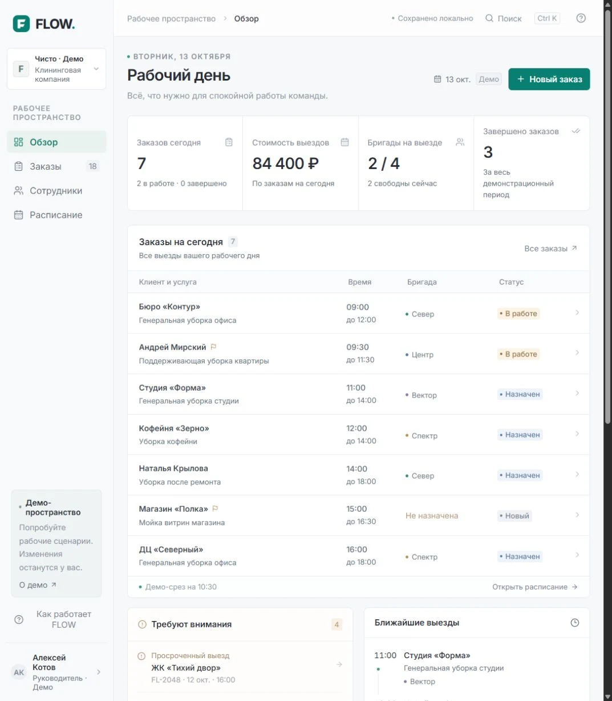

лет опыта
разработки.
Собираю сайты под бизнес-задачи, а не просто красивые страницы.
Разработка сайтов и AI-автоматизация для вашего бизнеса
Не просто красивая страница. Продуманное предложение, дизайн и автоматизация, которые помогают превращать рекламные переходы в заявки.
Собираю сайты под бизнес-задачи, а не просто красивые страницы.
Лендинги, сервисные сайты, каталоги, формы и интеграции.
Сроки, объём и результаты фиксируются до старта.
Красивые анимации тормозят телефон, а клиент не понимает, куда нажать, чтобы купить.
Разработчик обещал сделать за неделю, а пропал на месяц. Вы теряете время, трафик и деньги.
Вам просто сверстали текст. Никто не продумал воронку, аналитику и путь клиента до заявки.
Ваш сайт должен работать на продажи.
Я не верстаю сайты. Я создаю цифровые активы, которые генерируют вам деньги.
Заказы, расписание, выездные команды и отчёты — в одном рабочем пространстве. Самостоятельный проект, в котором можно проверить сценарии работы команды.
Попробовать FLOWОткроется демо с вымышленными заказами.

Стоимость
от 15 000 ₽
Чтобы запустить услугу или проверить новую идею.
от 40 000 ₽
Чтобы рассказать о компании и помочь клиенту выбрать.
от 70 000 ₽
Для первой версии сервиса с одной основной задачей.
Для сайта и сервиса сначала определяем состав первой версии. CMS, интеграции и AI — отдельные пункты сметы. Домен, хостинг и подписки на внешние сервисы оплачиваются отдельно.
Уже есть сайт
Можно начать с отдельных страниц, мобильной версии, каталога или формы заявки. Сначала проверю текущий код и CMS, затем предложу объём работ и смету.
Меньше ручной работы
Заявки из формы в CRM, уведомления в Telegram, обмен данными с каталогом или AI-ассистент. Возможность подключения, доступы и стоимость проверяем до начала разработки.
Пример аналитики · все данные условные
Важно видеть, где человек останавливается: на услуге, заявке или разговоре с менеджером. Ниже — демонстрация такой аналитики, а не результаты моих клиентов и не обещание роста.
Все цифры условные: это пример аналитики, а не результаты клиентского проекта и не прогноз для вашего бизнеса.
Когда вы не можете ответить
Вечер, выходной или вы на встрече — вопрос уже пришёл. Ассистент может дать первый ответ, уточнить задачу и передать менеджеру заявку с контекстом. Возможности и правила ответа настраиваются под ваш бизнес.
Условия до начала работы
До предоплаты фиксируем, что входит в проект, сумму, порядок платежей и результат каждого этапа.
Договариваемся о датах показа и запуска, материалах и согласованиях с вашей стороны. Если объём меняется — сначала пересматриваем план.
Объём включённых доработок согласуем до старта. Новые страницы и функции оцениваю отдельно и начинаю после вашего согласия.
После завершения передаю исходники и доступы к проекту. Объясняю, как устроены изменения; поддержку и платные сервисы обсуждаем отдельно.
Вопросы и ответы
Достаточно рассказать, чем занимается бизнес и какую задачу хотите решить. Если есть текущий сайт, фотографии или примеры — пришлите. Готовое техническое задание не обязательно.
Лендинг, каталог и сервис с личными кабинетами требуют разного объёма работы. После обсуждения фиксируем состав проекта и итоговую смету. Дополнительные функции сначала согласуем.
Это мои самостоятельные проекты и концепты с работающими интерфейсами. Они показывают, что я умею создавать. Я не выдаю их за оплаченные клиентские работы и не приписываю им результаты продаж.
Да. Можно начать с отдельной страницы, мобильной версии, каталога, CMS или формы заявки. Сначала проверю техническую основу и доступы: возможность доработки и смету подтверждаю после знакомства с сайтом.
Здесь интерактивный сценарий, чтобы показать опыт клиента. Настоящий ассистент подключается отдельно: потребуются AI-сервис, информация о бизнесе и правила передачи диалога человеку. Стоимость подключения и работы сервиса обсуждается отдельно.
Вы получаете исходники и согласованные доступы. Что входит в исправления после сдачи и как оплачиваются дальнейшие изменения, фиксируем до старта. Хостинг, домен и внешние сервисы не становятся бесплатными после запуска.
Следующий шаг
Пришлите ссылку и то, что хотите улучшить. Если сайта ещё нет — расскажите о бизнесе и нужном результате. Обсудим объём, бюджет и следующий шаг.
@KiriwPerihМожно заполнить короткий бриф или написать сразу.
Сообщение отправляете вы.